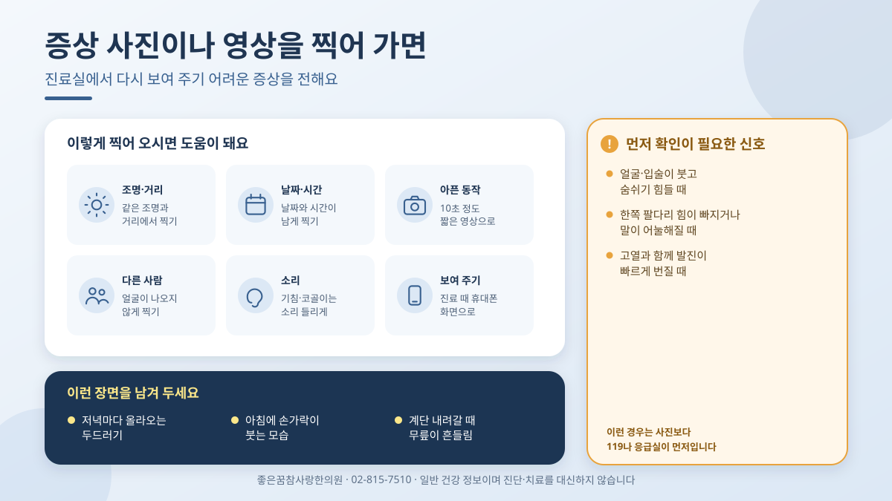

이종호 한의사 감수좋은꿈참사랑한의원 대표원장 (한의사 면허번호 19769)발행 2026-11-25 · 수정 2026-11-25
이 글의 차례
진료실에 오면 아팠던 증상이 잠잠해지는 경우가 있습니다. 두드러기, 아침 붓기, 밤에만 심해지는 떨림처럼 그때그때 달라지는 증상은 사진이나 영상이 말보다 정확하게 전해 주기도 합니다.
예를 들어 저녁마다 올라오는 두드러기는 다음 날 낮 진료 시간에는 흔적이 거의 남지 않는 경우가 많습니다. 아침에 손가락이 붓는 모습, 계단을 내려갈 때 무릎이 흔들리는 모습, 아이가 밤에 기침하는 소리도 마찬가지입니다. 이런 장면을 10초 정도만 찍어 두셔도 설명이 훨씬 쉬워집니다.
왜 사진과 영상이 도움이 될까요
- 진료 시간에는 증상이 사라져 있을 수 있습니다.
- 피부색과 붓기는 말로 설명하기 어렵습니다.
- 특정 동작에서만 나타나는 불편을 그대로 보여 줄 수 있습니다.
- 날짜별로 찍어 두면 변화의 흐름이 보입니다.
- 소리가 중요한 증상(기침, 코골이, 관절 소리)은 영상으로 남기면 함께 확인하기 좋습니다.
먼저 이렇게 여쭙니다
- 증상이 주로 언제 나타나나요?
- 사진이나 영상을 찍어 두셨나요?
- 증상이 몇 분, 몇 시간 이어지나요?
- 함께 나타나는 다른 증상이 있나요?
일상에서 먼저 해 볼 수 있는 것
- 같은 조명과 거리에서 찍기
- 날짜와 시간이 남게 찍기
- 아픈 동작은 10초 정도 짧은 영상으로
- 다른 사람 얼굴이 나오지 않게 찍기
- 기침·코골이처럼 소리가 중요한 증상은 소리가 들리게 녹화하기
한의원에서 함께 살필 수 있는 경우
- 피부 변화가 반복되는 경우 사진으로 날짜별 변화를 함께 봅니다.
- 동작할 때만 아픈 경우 영상으로 그 동작을 함께 확인합니다.
- 아이의 증상은 보호자가 찍은 기록을 함께 봅니다.
좋은꿈참사랑한의원에서는 먼저 불편한 상황을 충분히 듣고, 가져오신 사진과 영상을 함께 본 뒤 필요하다고 판단될 때 진찰합니다. 귀가 전에는 다음에 어떤 기록을 더 남기면 좋을지 알려 드립니다.
헷갈리기 쉬운 점
사진이 있다고 해서 진찰을 대신할 수는 없습니다. 사진과 영상은 그때의 모습을 전해 주는 참고 자료이고, 진료실에서는 지금의 상태와 말씀해 주시는 경과를 함께 살핍니다.
며칠 동안 어떻게 찍어 두면 좋을까요
- 붓기나 피부 변화처럼 하루 안에서도 달라지는 증상은 3~7일 동안 아침과 저녁 같은 시각에 한 장씩 찍어 두면 흐름이 보입니다.
- 일주일에 한두 번 나타나는 증상은 2~4주 정도 생길 때마다 찍고, 그날 먹은 것과 한 일을 한 줄씩 적어 두세요.
- 동작할 때만 아픈 증상은 그 동작을 10초 정도 영상으로 남기되, 아픈 것을 참으며 일부러 여러 번 반복하지는 마세요.
- 얼굴·입술이 붓고 숨쉬기 힘들거나, 한쪽 팔다리 힘이 빠지는 증상은 사진을 찍기보다 바로 응급실로 가는 것이 먼저입니다.
상황별로 이렇게 해 보세요
예를 들어 저녁마다 두드러기가 올라오는 직장인이라면, 올라온 부위를 같은 조명에서 찍고 그날 저녁 메뉴와 운동, 목욕 여부를 메모해 두세요. 며칠 모으면 반복되는 상황이 보이기도 합니다.
예를 들어 계단을 내려갈 때만 무릎이 시큰한 어르신이라면, 가족이 옆에서 계단을 내려가는 모습을 짧게 찍어 주시면 됩니다. 이때 넘어지지 않도록 난간을 잡은 채로 찍는 것이 좋습니다.
예를 들어 아이가 밤에만 기침을 하거나 코를 고는 경우라면, 소리가 들리게 1분 안쪽으로 녹화해 두세요. 아이 얼굴이 꼭 나올 필요는 없고 소리와 숨 쉬는 모습만으로도 충분합니다.
스스로 확인해 보는 체크 목록
- 증상이 진료 시간에는 잘 보이지 않는 편인가요?
- 찍은 사진에 날짜와 시간이 남아 있나요?
- 같은 조명과 거리에서 찍었나요?
- 다른 사람 얼굴이나 개인 정보가 화면에 나오지 않나요?
- 사진마다 그 직전에 한 일을 짧게 적어 두었나요?
- 보여 드릴 사진을 앨범 한곳에 모아 두었나요?
- 증상이 사라지거나 가라앉은 계기를 함께 적어 두었나요?
첫 방문 진료는 이렇게 진행됩니다
처음 오시면 접수 뒤 상담에서 불편한 상황을 충분히 듣고, 가져오신 사진과 영상을 휴대폰 화면으로 함께 봅니다. 그다음 진맥과 신체 진찰로 지금의 상태를 살피고, 필요하다고 판단될 때 다른 진찰을 더합니다. 오늘 받을 치료와 그 이유를 먼저 설명해 드리고, 귀가 전에는 다음 방문까지 어떤 장면을 더 기록해 오시면 좋을지 알려 드립니다.
사진은 한의원으로 따로 보내지 않으셔도 되고, 진료 때 보여 주시면 충분합니다. 복용 중인 약이나 다른 병원에서 받은 검사 결과가 있으면 함께 가져오세요. 초진은 진찰 시간이 있어 재진보다 오래 걸릴 수 있으니, 첫날은 일정을 넉넉히 잡아 주시는 것이 좋습니다. 사진과 영상은 그때의 모습을 전해 주는 참고 자료로 쓰입니다.
이런 증상은 사진·영상으로 남기기 좋습니다
- 피부: 두드러기, 붉어짐, 발진, 멍처럼 시간이 지나면 모양과 색이 바뀌는 것
- 붓기: 아침마다 손가락이나 눈두덩이 붓는 모습, 저녁에 발목이 붓는 모습
- 움직임: 팔을 올릴 때, 계단을 내려갈 때, 고개를 돌릴 때처럼 특정 동작에서만 불편한 모습
- 소리: 밤 기침, 코골이, 숨소리, 관절에서 나는 소리
- 혀: 아침에 일어나 양치 전 같은 조명에서 찍은 혀 모습(혀 모습은 진맥·문진과 함께 보는 참고입니다)
반대로 통증의 세기나 저린 느낌, 어지럼처럼 눈에 보이지 않는 증상은 사진보다 언제, 얼마나, 무엇을 할 때 생겼는지를 적은 짧은 메모가 더 도움이 됩니다.
찍을 때 지켜 주세요
- 다른 가족이나 지나가는 사람의 얼굴, 집 주소, 이름표처럼 개인 정보가 화면에 나오지 않게 찍습니다.
- 아픈 부위를 일부러 누르거나 증상이 다시 나타나게 하려고 무리한 동작을 반복하지 않습니다.
- 사진에 필터나 보정을 쓰면 피부색이 실제와 달라 보일 수 있어, 기본 카메라로 찍는 편이 좋습니다.
- 사진과 영상은 진료 때 휴대폰 화면으로 보여 주시면 되고, 한의원에 따로 보내거나 남겨 두지 않으셔도 됩니다.
다시 오실 때는 이렇게 이어서 봅니다
다시 오시면 지난번에 보여 주신 사진과 그사이 새로 찍은 사진을 나란히 놓고, 달라진 점을 함께 이야기합니다. 진맥은 매번 다시 짚고, 잠과 식사, 생활의 변화도 이어서 여쭙습니다.
사진을 여러 장 찍으셨다면 진료 전에 가장 증상이 잘 보이는 사진 몇 장을 골라 앨범 맨 앞에 모아 두세요. 진료 시간 안에서 꼭 보여 드릴 장면을 먼저 볼 수 있어 상담이 훨씬 수월해집니다. 사진마다 날짜와 함께 '아침', '운동 뒤', '자기 전'처럼 상황을 한 단어로 적어 두셔도 좋습니다.
사진을 지우지 말고 모아 두시면 몇 주 뒤 흐름을 비교하기 쉽습니다.
이렇게 기록해 오시면 상담이 쉬워집니다
- 증상 사진·영상과 찍은 날짜
- 증상이 생긴 상황과 지속 시간
- 먹은 음식이나 약, 함께 한 일
- 증상이 사라진 계기
- 사진·영상을 찍은 시각과 그 직전에 한 일
이런 증상은 먼저 확인이 필요합니다
- 얼굴·입술이 붓고 숨쉬기 힘든 경우
- 한쪽 팔다리 힘이 빠지거나 말이 어눌해진 경우
- 고열과 함께 발진이 빠르게 번지는 경우
이런 경우는 사진을 찍기보다 응급실이 먼저입니다. 복용 중인 약은 처방한 의사와 상의 없이 줄이거나 끊지 않습니다.
함께 읽으면 좋은 글
- 가족이 녹음한 코골이 소리를 진료에 가져가면 무엇을 보나요?
- 한의원에 처음 가면 어떤 순서로 진료하고 무엇을 준비하나요?
- 아이가 배가 아프다고 할 때 위치와 시간은 어떻게 적어 두면 좋을까요?

여쭙는 것
- 증상이 주로 언제 나타나나요?
- 사진이나 영상을 찍어 두셨나요?
- 증상이 몇 분, 몇 시간 이어지나요?
생활에서 해 볼 것
- 같은 조명과 거리에서 찍기
- 날짜와 시간이 남게 찍기
- 아픈 동작은 10초 정도 짧은 영상으로
한의원에서 함께 살필 것
- 피부 변화가 반복되는 경우 사진으로 날짜별 변화를 함께 봅니다.
- 동작할 때만 아픈 경우 영상으로 그 동작을 함께 확인합니다.
- 아이의 증상은 보호자가 찍은 기록을 함께 봅니다.
먼저 확인이 필요한 신호
- 얼굴·입술이 붓고 숨쉬기 힘든 경우
- 한쪽 팔다리 힘이 빠지거나 말이 어눌해진 경우
- 고열과 함께 발진이 빠르게 번지는 경우
한눈에 보는 표
| 구분 | 핵심 |
|---|---|
| 여쭙는 것 | 증상이 주로 언제 나타나나요? 사진이나 영상을 찍어 두셨나요? |
| 생활에서 해 볼 것 | 같은 조명과 거리에서 찍기 날짜와 시간이 남게 찍기 |
| 한의원에서 함께 살필 것 | 피부 변화가 반복되는 경우 사진으로 날짜별 변화를 함께 봅니다. 동작할 때만 아픈 경우 영상으로 그 동작을 함께 확인합니다. |
| 먼저 확인이 필요한 신호 | 얼굴·입술이 붓고 숨쉬기 힘든 경우 한쪽 팔다리 힘이 빠지거나 말이 어눌해진 경우 |
자주 묻는 질문
사진은 어떻게 보여 드리나요?
진료 때 휴대폰 화면으로 보여 주시면 됩니다.
영상이 길어도 되나요?
증상이 보이는 부분만 짧게 찍으시면 충분합니다.
사진을 꼭 찍어야 하나요?
꼭은 아니지만 다시 보여 주기 어려운 증상이라면 도움이 됩니다.
사진을 한의원에 보내야 하나요?
보내실 필요 없이 진료 때 휴대폰 화면으로 보여 주시면 됩니다.
좋은꿈참사랑한의원은 재진 때 지난번 이야기부터 이어서 여쭙니다. 진료시간과 예약은 오시는 길에서 확인하세요.
어디서 상담받을 수 있나요?
좋은꿈참사랑한의원은 서울 동작구 만양로2길 2 신성빌딩 3층·5층(서울 동작구 상도동, 7호선 상도역 3번 출구 근처)에 있습니다. 한의사 3명(이종호 대표원장, 조영기 수석진료원장, 정원영 진료원장)이 진료합니다. 진료시간은 평일 09:30~20:00(점심 13:00~14:00), 토·일·공휴일 09:30~15:00이며, 방문 전 전화로 확인을 권합니다. 예약은 네이버 예약, 카카오톡 상담, 전화 02-815-7510로 받습니다.
이 글은 일반적인 건강 정보이며 개인의 진단이나 치료를 대신하지 않습니다. 증상이 있거나 복용 중인 약이 있다면 진료를 통해 확인하세요. 치료 효과는 개인마다 다를 수 있습니다.
작성 기준: 일반적으로 알려져 있는 건강 정보를 참고해 정리했습니다(대표원장 감수). 증상 기록은 1~2주 동안 하루 1회, 비슷한 시간에 적어 오시면 지난 상태와 비교하기 쉽습니다.